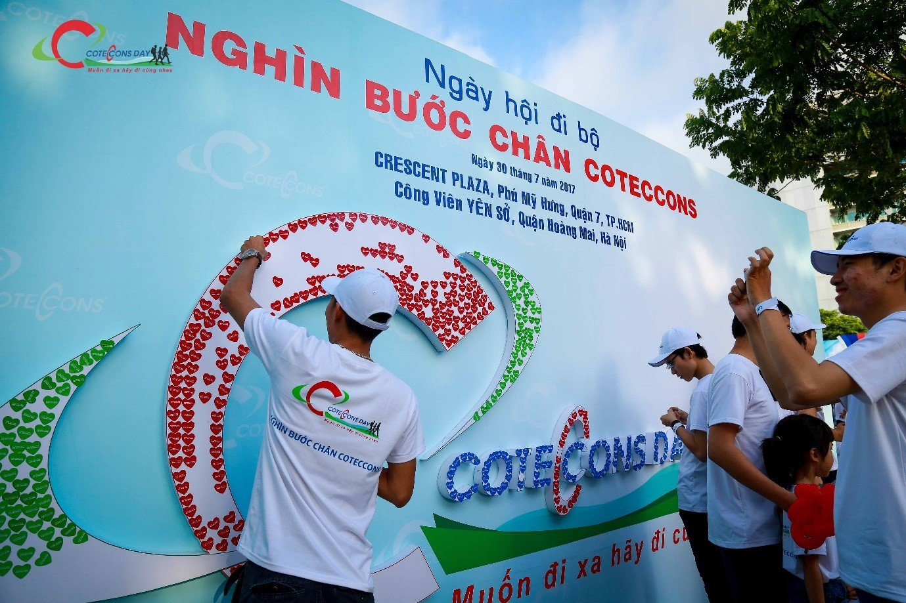
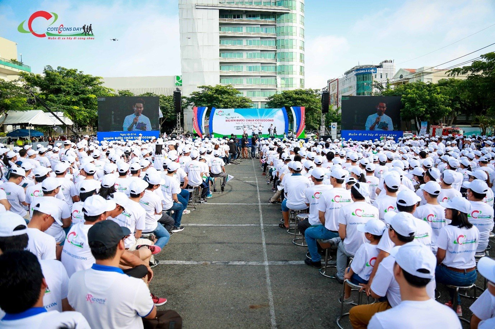
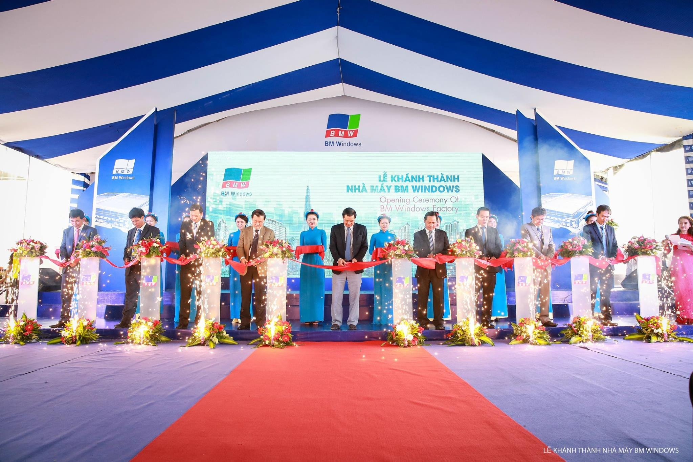
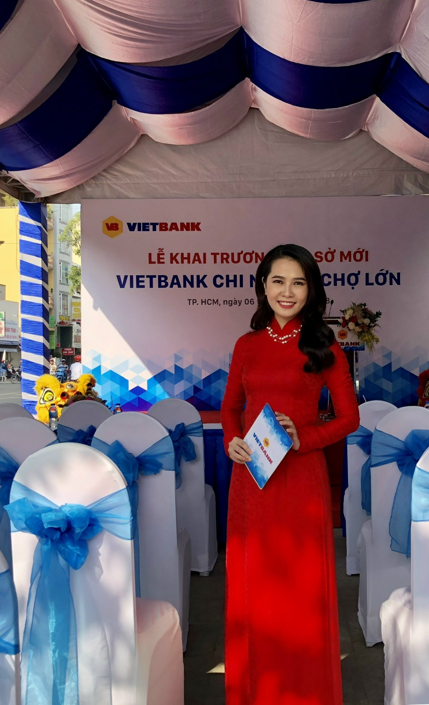

Một số chương trình, sản phẩm truyền thông mình đã thực hiện
1. TRUYỀN THÔNG SẢN PHẨM – DỰ ÁN
- Xây dựng kế hoạch, tổ chức thực hiện, đánh giá hiệu quả các hoạt động truyền thông sản phẩm - dự án bất động sản, truyền thông thương hiệu.
- Các sản phẩm:
- Bài PR, Thông cáo báo chí
- Nội dung brochure, leaflet, newsletter, magazine, headlines, taglines…
- Kịch bản, Scripts: coporate film, video clip, event…
- Social media (Fanpage, Instagram…)
Bài PR:
“Quẳng gánh lo đi” mà sống
Căn hộ thông minh tại vị trí của nhà đầu tư thông minh
Căn hộ tuyệt tác nơi trái tim Sài Gòn
2. TRUYỀN THÔNG NỘI BỘ
Xây dựng các kênh truyền thông, ấn phẩm nội bộ
Tạp chí Nội bộ Coteccons
Tổ chức sự kiện, hoạt động nội bộ gắn kết CBNV, phát triển văn hóa doanh nghiệp
Ngày hội đi bộ Coteccons day
- Hơn 4.000 thành viên Coteccons Group hai miền Nam – Bắc tham gia
- Chương trình cầu truyền hình trực tiếp Hà Nội – TP.HCM
- Chuỗi sự kiện chào mừng (Cuộc thi nội bộ, Chương trình từ thiện…)


Xem Chi Tiết
3. QUAN HỆ CÔNG CHÚNG (PR)
- Thiết lập - phát triển quan hệ đối ngoại, truyền thông: cơ quan chính quyền, cơ quan quản lý báo chí, cơ quan báo chí…
- Phụ trách công tác dự báo rủi ro, xử lý khủng hoảng truyền thông
- Triển khai các chương trình CSR: tài trợ, cộng đồng…
- Phụ trách công tác tham gia hiệp hội, giải thưởng
- Đại diện công ty phát ngôn, tham dự các sự kiện
Chương trình tham quan nhà máy Acecook
- Thu hút hơn 10.000 người mỗi năm tham quan (sinh viên, khách hàng, đối tác)
- Chương trình tham quan tại: TPHCM – Hà Nội – Vĩnh Long
Chương trình Tiếp sức mùa thi
4. BIÊN TẬP VIÊN – MC
- Biên tập viên - Phóng viên kinh tế - Trợ lý đạo diễn & tổ chức sản xuất
- Dẫn chương trình truyền hình - sự kiện
VTV9: Chương trình Đô thị Thông minh
VTV1: Chương trình Giao lưu Việt Nhật
Sự kiện:
Lễ Khánh thành nhà máy BM Windows

Lễ Khai trương cơ sở mới Vietbank Chợ Lớn
